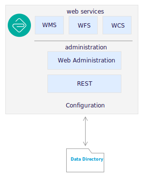
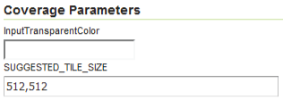

Workbook§
Setting up a half-day training workbook.
Setting up a half-day training workbook.
Directory structure:
.gitignore - optional to ignore files such as the build directoryREADME.md - workbook title and objectivesbuild.xml - ant build scriptbuild.properties - fill-in-the blank properties for build scripttarget/ - generated outputsrc/ - workbook contentssrc/config.py - sphinx build fileApache Ant is a cross platform build system similar to the unix make command. It defines a series of build targets that can be performed on the command line. Each build target is a small recipe consisting of tasks to be performed. Build targets can depend on each other (so that training material must be generated before being packaged as a zip bundle).
To list ant build targets intended for use (those that have a desription):
ant -p
Shown when browsing content in GitHub and GitLab. Markdown used to avoid conflicting with sphinx-build.
Configuration file for sphinx-build and configure builders for html and slide output.
The config.py file is written in python, we have used this to:
build.properitesProvide properties to conf.py:
1 2 3 4 5 | project=GeoCat Theme Example
subtitle=Writing guidelines
author=GeoCat BV
theme_path=..
destfile=writing_guide
|
Sphinx toctree contents:
src/index.rst - title page and table of contentssrc/figure/ - diagrams and illustrationssrc/img/ - common imagesCommon sections:
src/welcome/index.rst - overview and objectivessrc/review/index.rst - optional review for certificationsSection contents:
src/section/index.rst - section pagesrc/section/exercsie.txt - exercise included in textsrc/section/img - images and screen snapssrc/section/files - files for literal includes and downloadsCarefully constructed providing:
Used for svg and png diagrams:
geoserver_data_directory.svg
geoserver_data_directory.png
Figures are provided with a caption describing the content (even if that ends up repeating some of the text).
The GeoServer data directory is the location of the configuration information on disk.
GeoServer data directory
The GeoServer data directory is the location of the configuration information on disk.
.. figure:: /figure/geoserver_data_directory.*
GeoServer data directory
Recommend use of a single shared figure folder as shown above with (leading / indicates path is relative to the config.py file). This makes it easier to manage and update diagrams.
Used for scripts, configuration files, and sample data such as icons:
elevation.sld
place.png
place.svg
Keep in mind this content is bundled with the workbook content and is not intended for handling large files.
Scripts and configuration files are often presented as a code example using literalinclude directive.
Here is an improved
elevation.sldSLD showing the elevations:<?xml version="1.0" encoding="ISO-8859-1"?> <StyledLayerDescriptor version="1.0.0" xsi:schemaLocation="http://www.opengis.net/sld http://schemas.opengis.net/sld/1.0.0/StyledLayerDescriptor.xsd" xmlns="http://www.opengis.net/sld" xmlns:ogc="http://www.opengis.net/ogc" xmlns:xlink="http://www.w3.org/1999/xlink" xmlns:xsi="http://www.w3.org/2001/XMLSchema-instance"> <NamedLayer> <Name>elevation_points</Name> <UserStyle> <Title>Elevation Points</Title> <FeatureTypeStyle> <Rule> <Title>azure point</Title> <PointSymbolizer> <Graphic> <Mark> <WellKnownName>cross</WellKnownName> <Fill> <CssParameter name="fill">#333333</CssParameter> </Fill> </Mark> <Size>3</Size> </Graphic> </PointSymbolizer> <TextSymbolizer> <Label> <ogc:PropertyName>elevation</ogc:PropertyName> m </Label> <LabelPlacement> <PointPlacement> <AnchorPoint> <AnchorPointX>0.5</AnchorPointX> <AnchorPointY>0.0</AnchorPointY> </AnchorPoint> <Displacement> <DisplacementX>0</DisplacementX> <DisplacementY>2</DisplacementY> </Displacement> </PointPlacement> </LabelPlacement> </TextSymbolizer> </Rule> </FeatureTypeStyle> </UserStyle> </NamedLayer> </StyledLayerDescriptor>
#. Here is an improved :download:`elevation.sld <files/elevation.sld>` SLD showing the elevations:
.. literalinclude:: files/elevation.sld
:language: xml
The root img folder is primarily used for branding or common screens such as how to login.:
gc_geosever_logo_300x300.png
Each section has an section/img folder used to manage screen snaps for the section.:
coverage_dem_bands.png
coverage_parameters.png
gray_preview.png
Screen snaps are used with the figure directive, so we can provide a caption.
The SUGGESTED_TILE_SIZE parameter is set automatically by GeoServer when images use internal tiling (generally this setting is not changed from its default).
Coverage parameters
The :guilabel:`SUGGESTED_TILE_SIZE` parameter is set automatically by GeoServer when images use internal tiling (generally this setting is not changed from its default).
.. figure:: img/coverage_parameters.png
Coverage parameters
Use straight forward writing with three levels of headings:
Page
****
Section
=======
Content
-------
Content
Exercise
^^^^^^^^
Step-by-step instructions.
We are shifting to numbering toctree directives and providing a heading for exercises to help attendees quickly locate the right section to work on.
Care is taken to ensure that content generates as slides and workbook.
Workbooks are built with autoslides:
Pages use straight forward writing with three levels of headings:
Page
****
Section
=======
Content
-------
Slide content
A forth level of headings is used for exercises:
Exercise: WMS GetCapabilities
^^^^^^^^^^^^^^^^^^^^^^^^^^^^^
.. ifslides::
* Exercise
.. ifnotslides::
.. include:: wms_getcapabilities_exercise.txt
Distinct numbered heading helps class members locate exercise quickly.
Manage long pages using include directive.
Basics
******
.. include:: admin.txt
.. include:: workspace.txt
.. include:: datastore.txt
.. include:: layer.txt
.. include:: group.txt
.. include:: style.txt
Use ifslides and ifnotslides to control content included in presentation and workbook.
Example
Data directory access required for icons and fonts.
.. ifslides::
Data directory access required for icons and fonts.
.. ifnotslides::
Access to the GeoServer data directory is required to manage the icons and fonts used for styling.
Some content like references may only be in the workbook.
.. ifnotslides::
Reference:
* :geoserver:`WMS reference <services/wms/reference.html>`
Use slide directive for additional slides.
.. slide:: GeoCat Introduction
:level: 1
:class: slide-intro
.. figure:: /img/geocat_logo_text.*
Spatial data publication and discovery with products, services and philosophy following the free and open source source software.
Software development company based in Bennekom, with developers in the Netherlands, Spain and Canada.
Theme provides built-in slide classes:
Example
Slide-heart class
.. slide:: Free and Open Source Company
:level: 1
:class: slide-heart
Theme slide-outro is a nice way to end a presentation:
Example
Use of slide-outro to end presentation.
Note ref link to return to top-level .. _contents: anchor:
.. slide:: Questions and Review
:level: 2
:class: slide-outro
:ref:`^ </contents>`
Example
Slide inline-contents used to generate a slide, and include the text in the workbook.
Writing guide with cut-and-paste examples for your own documentation, user manuals, and training materials.
Example
Slide inline-contents example
.. slide:: GeoCat Documentation Example
:level: 2
:inline-contents: True
Writing guide with cut-and-paste examples for your own documentation, user manuals, and training materials.
Use only directive to include content in the instructor build of the workbook.
Example
Note
Instructor: What is the difference between the CRS:84 and EPSG:4326?
Instructor Notes
The difference is the strict definition of axis order.
1 2 3 4 5 6 7 | .. note:: *Instructor*: What is the difference between the ``CRS:84`` and ``EPSG:4326``?
.. only:: instructor
.. admonition:: Instructor Notes
The difference is the strict definition of axis order.
|
Use admonition and ifnotslides directive to avoid including the full exercises into presentations.
Example
Exercise WMS 1.3.0 GetCapabilities request
Example
Exercise WMS 1.3.0 GetCapabilities request
Exercise
To show the WMS GetCapabilities:
Navigate to Demo ‣ Demo Requests page.
Select the WMS_1.1.1_GetCapabilities.url request. The full request is reproduced below, with line breaks added for clarity:
http://localhost:8080/geoserver/wms?
service=wms&
version=1.1.1&
request=GetCapabilities
The server endpoint, service, and version are all the same as we have seen before. The only difference is the request, which is GetCapabilities. There are no other parameters needed.
Click Submit.
Exercise: WMS GetCapabilities
^^^^^^^^^^^^^^^^^^^^^^^^^^^^^
.. ifslides::
* Exercise
.. ifnotslides::
.. include:: wms_getcapabilities_exercise.txt
Exercises are written using txt extension to avoid being processed by sphinx-build until included.
wms_getcapabilities_exercise.txt:
.. admonition:: Exercise
To show the WMS GetCapabilities:
#. Navigate to :menuselection:`Demo --> Demo Requests` page.
#. Select the ``WMS_1.1.1_GetCapabilities.url`` request. The full request is reproduced below, with line breaks added for clarity::
http://localhost:8080/geoserver/wms?
service=wms&
version=1.1.1&
request=GetCapabilities
The server endpoint, ``service``, and ``version`` are all the same as we have seen before. The only difference is the ``request``, which is ``GetCapabilities``. There are no other parameters needed.
#. Click :guilabel:`Submit`.
Demo
Instructor demo on screen or online video.
Exercise
Step-by-step exercise required to proceed with workbook.
Explore
Review and apply concepts covered in workbook.
Challenge
Go beyond the workbook with experimentation and research.
Example
Exercise
Examine the styles of our newly imported layers, and compare two layers with the same geometries:
.. admonition:: Exercise
Examine the styles of our newly imported layers, and compare two layers with the same geometries:
#. Click :guilabel:`Layer Preview`.
Writing step-by-step instructions:
list-table directive for cut-and-paste into applicationfigure directive for screen snap, with caption naming what is on screen, adjusting size with figwidth as needed#. Log in as the GeoServer administrator.
.. list-table::
:widths: 30 70
:width: 100%
:stub-columns: 1
* - User:
- :kbd:`admin`
* - Password:
- :kbd:`geoserver`
* - Remember me
- Unchecked
.. figure:: img/server_geoserver_login.png
GeoServer Welcome page
Example
Log in as the GeoServer administrator.
| User: | admin |
|---|---|
| Password: | geoserver |
| Remember me | Unchecked |
GeoServer Welcome page
Sphinx rst tips for step-by-step instructions:
#. to number steps, so new steps can be added over time.kbd, gui-label, command, menu-selection consistently to allow theme designer to improve workbook appearance over time.figure directive to provide caption for each screen snapDo not complicate step-by-step instructions with description or discussion. Or introduce new concepts, these should be covered in the presentation content.
If you really need to take a break for discussion, perhaps in an instructor demo. Make a clearly numbered step that is just discussion.